SKYJJGW / NOTES FROM A BUILDERNO. 04 / 04BEHIND THE CODE / SKYJJGW画面背后，是一个学习中的我。
喜欢把好奇心变成小项目，再从项目里找到新的问题。

保持好奇。01 / ABOUTS关于我软件工程在读
在实践里生长。02 / LEARNING学在学习实践与记录
让想法相遇。03 / CONNECT↗GitHub代码与交流
保持好奇。01 / ABOUTS关于我软件工程在读
在实践里生长。02 / LEARNING学在学习实践与记录
让想法相遇。03 / CONNECT↗GitHub代码与交流
CURRENTLY EXPLORINGPython 后端与 AI 应用是当前的实践方向；Java 与 Spring 正在学习中。
项目有成品，也有实验，仓库记录着各自的进度。
在 GitHub 找到我 ↗ 保持好奇，认真做事。
如果某个项目让你感兴趣，欢迎到对应仓库看看，或留下一个 Issue。